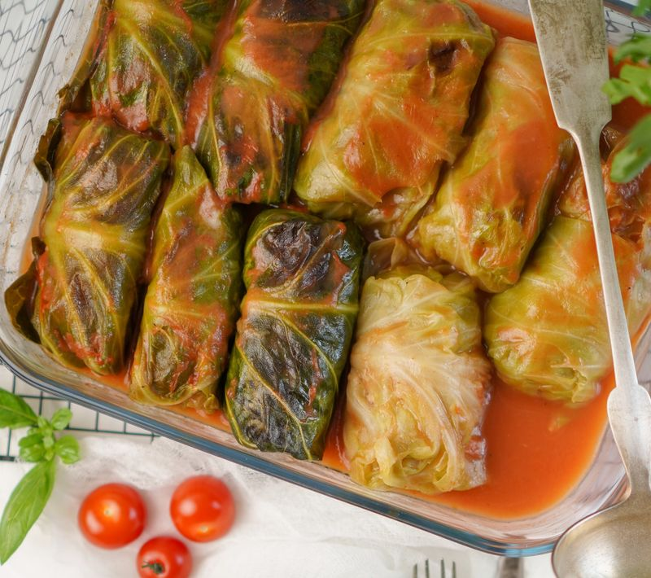

Cigares aux choux
Préparation: 30 minutes
Cuisson: 1h30 à 2h
Total: 2 heures à 2h30
Portions: 8 portions
Ingrédients
-
1 chou moyen (environ 3 lbs)

-
1 t d'oignons hachés fins
-
2 c. à table de gras
-
1 lbs de viande au choix hachée
-
2 c. à thé de sel
-
1/4 c. à thé de poivre
-
3 t de riz cuit
-
2 t de jus de tomate
-
2 c. à table de beurre
Instructions
Enlever le coeur du chou. Garder les grosses feuilles de l'extérieur.
Couvrir presque complètement le chou d'eau bouillante; couvrir et mijoter jusqu'à ce que les feuilles soient molles et transparentes (environ 20 min.).
Séparer en deux les grandes feuilles en enlevant la côte du centre.
Sauter 1 t d'oignons hachés fins dans 2 c. à table de gras jusqu'à transparence.
Ajouter la viande et les assaisonnements et brunir.
- 1 lbs de viande au choix hachée
- 2 c. à thé de sel
- 1/4 c. à thé de poivre
Mélanger au riz.
Déposer 1/4 t de garniture sur chacune des feuilles de chou.
Plier la feuille sur la garniture et replier chaque bout puis rouler.
Placer les grosses feuilles dans le fond d'un plat à four; déposer une rangée de roulés et assaisonner de sel et de poivre.
Répéter cette opération 2 ou 3 fois.
Préparer la sauce en réchauffant le jus de tomate et le beurre.
Verser sur les roulés et couvrir de grosses feuilles de chou.
Couvrir et cuire à 180 °C (350 °F) jusqu'à ce que le chou soit tendre (1 1/2 h à 2h).
Notes
Donne 32 roulés au chou, 8 portions